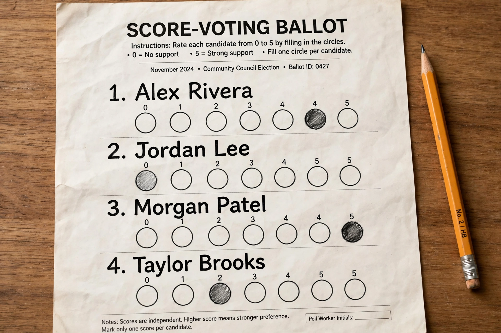

From Wikipedia, the free encyclopedia
Score voting, also known as range voting, is a single-winner electoral system in which each voter rates each candidate with a numerical score within a predetermined range, such as 0 to 5 or 0 to 10; the candidate with the highest total (or average) score wins. Score voting is a cardinal voting method, as opposed to ordinal systems such as ranked-choice voting, because it records the intensity of voters' preferences, not merely their ordering.
Each voter gives every candidate a score. Blank entries are commonly counted as zero. The scores for each candidate are summed (equivalently, averaged), and the candidate with the greatest total is elected. A binary variant — each candidate scored only 0 or 1 — is equivalent to approval voting. Unlike positional voting systems such as the Borda count, score voting does not depend on a candidate's rank position.

Score voting satisfies the independence of irrelevant alternatives in a way ranked systems do not: adding a losing candidate cannot change the relative totals of the others, so it is not subject to the classic spoiler effect. It always elects the candidate with the highest total utility if voters score honestly in proportion to their preferences. However, it fails the majority criterion and later-no-harm in some formulations, and rational voters may engage in strategic voting by giving maximum and minimum scores only ("bullet voting"), which in equilibrium approximates approval voting.
Score voting has historical antecedents in the Roman Senate and in the election of the Doge of Venice, and rating scales are ubiquitous in non-political contexts — product reviews, judging in sport, and the selection of hosts for events such as the Eurovision Song Contest (in modified form). It has been used by some political parties and organisations for internal elections, and variants ("STAR voting", combining scoring with an automatic runoff between the top two) were proposed in ballot initiatives in Oregon. The French approval-style experiments conducted around presidential elections drew on similar ideas.
Categories: Electoral systems · Single-winner electoral systems